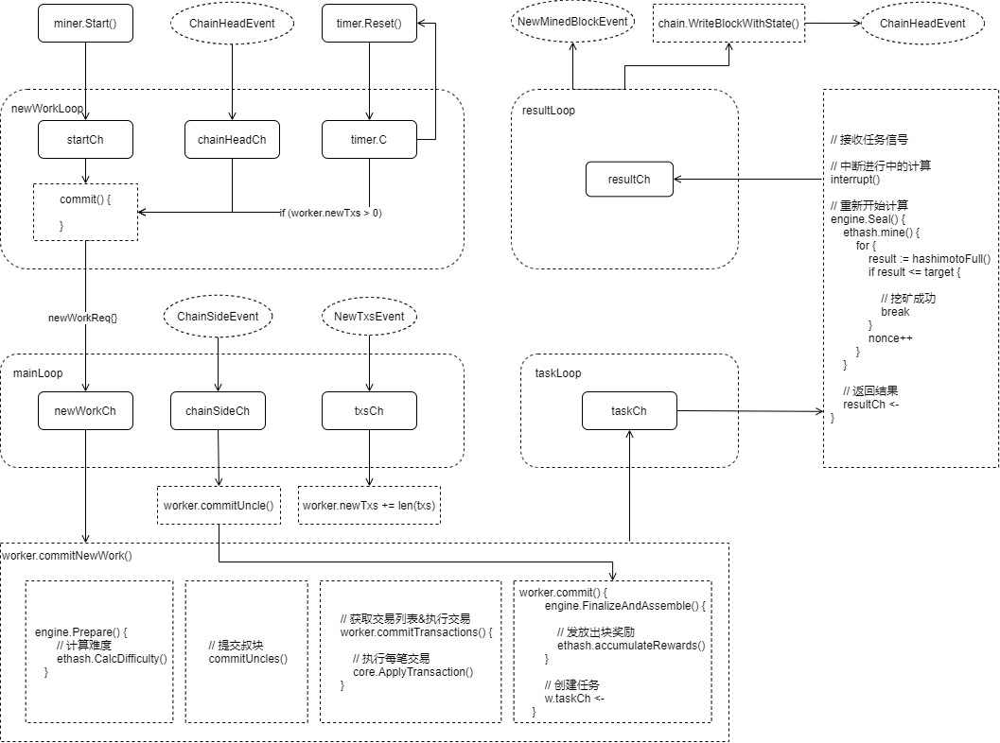

挖矿

启动挖矿
在启动 geth 程序的时候，可以配置挖矿相关的参数：
MINER OPTIONS:
--mine Enable mining
--miner.threads value Number of CPU threads to use for mining (default: 0)
--miner.notify value Comma separated HTTP URL list to notify of new work packages
--miner.notify.full Notify with pending block headers instead of work packages
--miner.gasprice value Minimum gas price for mining a transaction (default: 1000000000)
--miner.gastarget value Target gas floor for mined blocks (default: 8000000)
--miner.gaslimit value Target gas ceiling for mined blocks (default: 8000000)
--miner.etherbase value Public address for block mining rewards (default = first account) (default: "0")
--miner.extradata value Block extra data set by the miner (default = client version)
--miner.recommit value Time interval to recreate the block being mined (default: 3s)
--miner.noverify Disable remote sealing verification
如果没有显式启用挖矿，即不设置参数 --mine，那么节点不会开始挖矿
可以在节点启动后，手动在控制台启动挖矿：
> miner.start(1)
信号调度
Worker 启动四个循环，通过监听各个通道的信号变化来调度挖矿过程
-
newWorkLoop：
- startCh:监听
miner.worker.start() - chainHeadCh：监听新出块事件
ChainHeadEvent - timer.C：监听定时触发事件
- 当以上任意信号发生时，调用
commit()方法，提交newWorkReq{}请求
- startCh:监听
-
mainLoop:
-
newWorkCh：监听
newWorkReq{}信号：- 调用
worker.commitNewWork()：- 计算难度
- 提交叔块
- 执行交易
- 创建计算任务
- 调用
-
chainSideCh：监听叔块事件
-
txsCh：监听新交易事件
-
-
taskLoop：
- taskCh：监听任务信号：
- 中断进行中的计算
- 重新开始计算
- 返回计算结果
- taskCh：监听任务信号：
-
resultLoop：
- resultCh：监听结果信号：
- 广播出块事件
NewMinedBlockEvent - 写入区块链：
- 触发
ChainHeadEvent事件：- 由于
newWorkLoop在监听ChainHeadEvent，所以会开始下一轮挖矿
- 由于
- 触发
- 广播出块事件
- resultCh：监听结果信号：